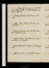
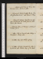

- About
- Diary
- People
- Events
- Reading
- Writing
- Meals
- Meetings
- Search

Jan. 1. Su.Essays, 1 page: revise. Marchmont, Vol. II, p. 152. Dine at Hts; adv. Ritson; talk of children & marriage: sup at Knight's; adv. Sherwin count Dip & Morecraft.
2. M.Revise. Rights of W., p. 374: Marchmont, p. 256: Constant Couple. chez elle.
3. Tu.Marchmont, Vol. III, p. 100. J G, Dangerfield & Stoddart call: Dyson dines: Wt at tea: chez elle;--.
4. W.Revise. Italian, Vol. III, p. 356. Call on Davis: theatre, 1/2 Robinson Crusoee.
5. Th. Rights of W., p. 413: Italian, p. 444, fin: Marchmont, p. 268. Carrs calls; talk of matter: call on Inchbald; & mrs Rn na: Debrett's; Tarleton: chez elle.
6. F.Revise. Marchmont, Vol. IV, p. 140. Call on Northcote; talk of fame: chez moi.
7. Sa. Essays, p. 225, 226, 227/2. Fawcet dines: Dyson & Dibbin at tea: Theatre; Honey-Moone: chez elle;--. Lady Lanes oh calls, n.
Jan. 8. Su.Essays, p. 227/2. Fawcet's Poems: Marchmont, p. 180. Call on Ht; adv. St: Dine at King's, w. Wolcot, Danvers, sir C Bamfylde, Matthew, Dennet, Hardcastle, & mes Temple.
9. M.Essays, p. 228/2. Marchmont, p. 328: Fawcet calls: Debrett's; Tarleton, R Adair, Richardson, Parry & Armstrong: M dines: chez elle.
10. Tu.Essays, p. 228/2-230/2. Marchmont, p. 369. Fawcet bs: call on Inchbald: Debrett's; Tarleton, Rous, Hanger, Twentyman, Webb, Perry & Ht: Theatre, Cure for the Heart-Ache;Wt & Boadene: sup at Carr's, w. Turner, Burrel, Bell & Littledale; miracles.
11. W. Marchmont, p. 442; fin: De Sevrac, p. 184. Jno Anderson & Wt call: call on Bosville; adv. Wills: chez moi.
12. Th. Essays, p. 230/2-233/2. Rights of W., p. 452, fin: De Sevrac, p. 322. Tea Carr's, w. mrs Barbauld, Wt, Tooke & Wards. Wt v. Burke, p. 60. Burke born 12 Jan. 1730e.
13. F. Essays, 4 pages: Revise. chez elle;--.
14. Sa.Essays, p. 233/2, 4, 5, 6. Wt v. Burke, p. 124: De Sevrac, Vol. II, p. 93. Meet Carlisle: call on Inchbald & Batty: sup at Nicholson's; talk of banks & labour & population. B Hollis message.
Jan. 15. Su.Essays, p. 237-240. Wt v. Burke, p. 159, fin: Iniquity of Bank, p. 33: De Sevrac, p. 228. Dine at Ht's; adv. H R: sup at Twiss's; adv. Zuccelli.
16. M. Essays, p. 240-244/2. Iniquity, p. 47, fin: Chalmers on Shakespear, p. 84. Call on Ritson: chez elle;--.
17. Tu.Revise. Call on Davis: Dyson dines: chez moi.
18. W. Revise. Dine at Reveley's: chez elle.
19. Th. Essays, p 3 1/2 pages. Call on Mackintosh; talk of Burke: M dines: chez moi;--.
20. F.Essays, 1 1/2 pages: revise. Chalmers, p. 196. Call on Ritson, Museum, Ht, & Nicholson n: theatre, Theodosius; Rns, Tn & Taylore.
21. Sa. Revise. Wrongs of Woman, p. 56. chez elle; dine;--.
Jan. 22. Su.Essays, 1 page. Montagu calls: dine at Ht's, w. Stoddart; adv. Thelwal: tea mrs Robinson's, w. mes Hanway, Hays & Wt, Tn, Taylor & Columbine: meet Bosville: call on Dr Moore n.
23. M.Mandeville on Hyp, p. 32: De Sevrac, p. 307. Dangerfield calls: meet Webb & d'Espard: call on B Hollis; adv. Disney: chez elle.
24. Tu. Write to Jas Ogilvie. Paine to Washington, pp. 76: Ireland senr, pp. 48: De Sevrac, Vol. III, p. 208. Call on Ritson & Hays: M dines.
25. W. De Sevrac, p. 318 fin. Call on Ritson: Museum: dine at Reveley's: theatre, Provoked Husbande: chez elle: meet Dyson, Butler Ds & Twiss.
26. Th.Revise. Cibber's Apology, p. 89. Westal's, w. St: call on Robinson; adv. Heath: meet Twiss. chez moi;--.
27. F.Revise. Cibber, p. 142. Dine at M Robinson's, w. Tn.
28. Sa.Revise. Cibber, p. 241. Call on Davis: chez elle.
Jan. 29. Su. Revise C Williams. Mansel, De Camp & C Moore call: dine at Hts, w. Parry, Tobin & St; adv. Ritson & H Richter.
30. M. Write to Wedgwood. Cibber, p. 324; Vol. II, p. 37. chez elle;--.
31. Tu.Revise Pol. Justice. Call on Davis: meet Fenwk: dine at Johnson's, w. Fuseli & Geddes; adv. Gregory & Stephens. Cibber, p. 354. 68. chez elle.
Feb. 1. M.eRevise C W. Cal Cibber, p. 168, fin. Call on Inchbald: chez moi;--.
2. Th.Enquirer, p. 297. Call on Porson & Johnson: Debrett's; Weld, Bosville, Perry & Ht: sup at miss Gs, w. Jno Anderson; talk of law.
3. F.Revise C W. Call at Norris's: theatre, Tamerlanee: chez elle;--.
4. Sa.Revise C W. Meet dr Moore: Debrett's; Bosville, Mills, Gillies & Parry: dine at King's, w. Belfast, Mays & Parkers.
Feb. 5. Su.Enquirer, p. 399. Dyson, M & J G call: dine at Hts, w. Parry; adv. Thelwal, mrs Fenwick & miss Saunders: chez elle.
6. M.Old Clothes-man. Bedlam, w. Johnson & Wt: call on Davis: dine at Tobin's, w. Ht, White & Burrel; adv. Matthews: theatre, Harlequin & Oberne.
7. Tu.Henry VIII, acts 1, 2, 3: Fatal Dowry: call on Davis//: chez elle dine.
8. W. Notes on Old Cn, 1/2: Henry VIII, acts 4 & 5. Dine at Reveley's: chez elle;--.
9. Th. Tom Jones, p. 184. Call on Ht, Davis, Montagu & mrs Fenwick: Marriage a-la- mode, w. Wte; adv. Ht & Fenwick: Dibbin & Dyson at tea: theatre, Friend in Neede; Parry.
10. F. Last proof, 10 lines, Write to Parr. Tom Jones, p. 265. M dines: chez elle; Everina.
11. Sa. Essays, 2 pages. Tom Jones, p. 288. Dine at Robinson, w. Heath & Payne: call on M Hays, & Foulkes n: sup at Nicholson's.
Feb. 12. Su.Erskine's pamphlet, p. 26. Dine at Tooke's, w. Thomson, Wardle & Dyson: Montagu calls: chez elle, E.
13. M. Erskine, p. 110: Burke versus Fox, pp. 94. Call on Davis, Inchbald, & Twiss n: theatre, Bold Stroke for a Wifee.
14. Tu.Revise C W. Erskine, p. 138, fin. Dine at Robinson's, w. Chalmers & Payne: M & Dyson at tea: chez elle, E. Naval Defeat of Spaine
15. W.Revise C W. Les Cinq Hommes, p. 20: Tom Jones, Vol. II, p. 24. Fawcet calls: call on Davis n, M Robinson n, & Twiss n.
16. Th.Revise C W. Les Cinq Hommes, p. 132, fin. Allen calls: call on Carlisle: chez moi;--.
17. F.Fawcet's Elegies. Tom Jones, p. 80. Theatres; 1/2 Barnwel; Gunninge: sup at miss G's, w. miss Jones & M.
18. Sa.Tom Jones, p. 100. Allen n, Reveley, Fawcet, Carlisle & Southey call: call on Davis: meet Ht & Burdet: dine, E.
Feb. 19. Su.M Moore, Montague, E Cooper, H Richter & Jno G call: dine at M's, w. miss G & L Jones: sup at mrs Robinson's, w. Tarleton & Columbine.
20. M. Call on Lawrence, Fuseli, mrs Inchbald, & E Mansel n: Debrett's, Weld, Bosville & Parry: dine at Ht's: call on Montagu n, & Fenwick; chez ell,E.
21. Tu.Ht's Comedy. Dine at Johnson's, w. Fuseli, Hewlet & Dr Oakley; adv. Stephens.
22. W.Ht's Comedy. Dine at Reveley's; adv. Etons: chez elle, E.
23. Th. Stoddart & Ht call: call on Twiss n: chez moi;--.
24. F.Revise P J. Tom Jones, p. 156. Call on Northcote; adv. capt Hunt; talk of portrait; & Nicholson n: Dyson at tea.
25. Sa.Tom Jones, p. 181. Call on Lawrence na, dr Moore, Wolcot, Opie (adv. Jer Taylor) & E Mansel: meet Twiss & Butler vdm: theatre, Bantry Baye: sup at M Robinson's, w. Wt & E.

Feb. 26. Su. Tom Jones, p. 216. Call on Porson (Perry), & Mackintosh: dine at Ht's, w. Rose, Allen, St, Fenwicks, miss Saunders & Cole; adv. Ritson: sup at mss G's, w. M, E C & E Mansel.
27. M.Tom Jones, p. 253. Ht calls: theatre, Coriolanus & the Shipwreck, w. Ee. Rheumatisme. Publication] Prohibition of Speciee.
28. Tu.Revise C W. Write to Wedgwood, 50. Call on Reynolds n: dine at King's, w. Danvers, Mathew & Bebzance. meet Sherwin & W Taylor.
Mar. 1. W.Revise C W. Debrett's; Robt Knight, Dealtry, Weld, Perry & Parry: Ht calls: Porson & Wt dine
2. Th.Fenwick & Otton call: call on Robinson: M dines: Dyson & Dibbin at tea: chez elle: meet Jameson. Earl of Orford dies.
3. F.Revise C W. Call on Ht; adv. Tobin; on Inchbd; & on Wallis, w. Inchbald: meet Parry: dines;--.
4. Sa.Revise C W. Vaurien, p. 96. Fenwick calls: call on Ritson, & Davis (adv. Taylors): Theatre, Wives as They Were, & Wicklow; adv. Wt, E, Lawrence, Robinson, Gregory, Chalmers, Parry & Hte.
Mar. 5. Su.M Moore, Dibbin & Dyson call; talk of criticism: call on Inchbald: meet Barry: dine at Hts, w. Montagu, Stoddart, & Cole, sup at Knt's. & E C; adv. H Richter: sup at Knight's.
6. M.Vaurien, p. 300. Fawcet calls: call on Fenwick: theatre, 3/10 Wives, &ce: sup at Nicholson's, talk of bank.
7. Tu.Vaurien, Vol. II, p. 100: Albernitz, Vol. I. Fawcet breakfasts: 3 Kings call: dine at Davis's, w. Taylor, Barbaulds & Livie; adv. Skene: chez elle;--.
8. W. Fawcet's Poems. Fawcet calls: dine at Reveley's: chez elle.
9. Th.Notes on Banks. Dine at King's, w. Danver, Bebzance & Carters: chez elle;--.
10. F.Call on Fenwick, & Mansel; adv. C Kemble: M dines: tea R Johnson's; talk of bank.
11. Sa.Revise P J. Call on Mansel; adv. E C & C Moore: Dyson dines: chez elle. J Hollis calls.
Mar. 12. Su.Revise P J. Fell & Jno G call; adv. Wt: dine at Ht's, w. Cole; adv. Banks, Sutton & Spurling: sup at M Robinson's, w. Tn & Columbine.
13. M. Revise P J. Rt Knight, & Dealtry & Ht call: dine at J Hollis's, w. Lister & Lewis; adv. Barry: Theatre, Rule a Wifee: chez elle;--.
14. Tu.Hugh Trevor, p. 94. Paine's Agrarian, pp. 38. Wills calls: meet Dennis: dine at Johnson's, w. Fuseli, Oakley & Geddes; adv. Stephens & Philips: call on Twiss n. Vaurien, p. 213.
15. W. Revise C W. Leroux & Hays call: call on Dr Anderson n: dine at Rt Knight's, w. Harry, Portens, Fuller, Dealtry, & Webb, & Greatheeds.
16. Th. Revise C W. Le Fataliste, p. 58. Oakley calls: ch dine;--. Vaurien, p. 323, fin.
17. F.Fataliste, p. 186. White calls: call on Davis & Ritson: M dines: theatre, 1/2 L'Allegroe: chez elle.
18. Sa.Fataliste, p. 244. Ht, J Hollis & Fenwick call: call on Banks n: Debrett's; Barry, Maxwel, Godfrey, Hanger & R Adair: Kearsley at tea: theatre, Lodoiska, w. Kearsleye.
Mar. 19. Su.Revise C W. Fataliste, p. 286; Vol. II, p. 36. Dine at Ht's, w. Barry, Parry, Gilchrist, Sutton & Cole: sup at Knight's, w. Cutting, Thomson, M, miss Jones & miss G.
20. M.Revise C W. Fataliste, p. 102. Oakley & Dyson dine; adv. M: chez elle.
21. Tu. Fataliste, p. 156. Call on Carlisle, Burdet, (adv. Maxw[ ] {,} Webb n, B Hollis n, Inchbald (Barry) & mrs Fenwick: meet Frend: tea M Hays's: theatre, Raymond & Agnese.
22. W. Fataliste, p. 194. Younger & Tobin call: dine at Reveley's: chez elle.
23. Th. Fataliste, p. 244. Fawcet calls: Debrett's; Weld{:} dine at King's, w. Gadagnes, Platts, Rogers, Opie & Wolcot: chez elle;--.
24. F.Fawcet's Poems: Fataliste, p. 274. Fawcet dines; Fenwicks at tea; adv. Wt. & Stoddart.
25. Sa.Revise C W. Fataliste, p. 320, fin: Religieuse, p. 86. chez elle.
Mar. 26. Su.Call on Carlisle (adv. Tweddel jr) & Mackintosh: Dibbin calls: dine at Hts, w. A A, Gilchrist, Cole, Spiring & E C: sup at miss G's, w. Knights, L J & M.
27. M.Revise C W. Call on Dr Parson, & Inchbald; adv. Taylor: M dines; adv. Fenwick & Stoddart: chez elle;--.
28. Tu. Townley's Collection, w. Carlisle, Lewis, Buchan, Bedfords, Featon & Lunettese: call on A A: M dines: tea Fenwick's, w. Wt, Tucker, Del Vallé & Saunders. Leroux calls.
29. W. Religieuse, p. 210. Panc.eLeroux calls: call on Northcote: Debrett's; Thanet, Barry, Burdet, Fergusson, Perry & Parry: Dyson at tea. sleeps;--.
30. Th. Revise P J. M dines: theatre; Wondere: chez elle.
31. F.Revise P J. Religieuse, p. 258. Tuthil calls: theatre, 1/2 Oratorio, Selectione: chez elle.
Apr. 1. Sa.Revise P J.Trevor, p. 166. Call on Inchbald: Debrett's; Barry, Parry & H White: meet Bosville & Tooke: dine.
Apr. 2. Su.Trevor, iterum. Jno G & Dyson call: dine at Ht's , w. Tuthil, x Cole & Charlotte Mercier: tea M Robinson's, w. Francis, Jerningham, Bourgeois, Roberts, Jackson, Porter, Pratt, Hanways, Taylor, Hays, Opie & Wt.
3. M. Religieuse, p. 411, fin. Dine at M's: chez elle.
4. Tu.Revise P J. Dine at Johnson's, w. Fuseli, Grignion, Blake, Dr Anderson & A Aikin: sup at Wts, w. Dyson.
5. W. Trevor, p. 187: Tom Jones, p. 312. Dyson & Ht call: call on Leroux: dine at Reveley's, confidencee: chez elle.
6. Th.Trevor, iterum. Write to Ht.Removee.Call on Hollis: tea Inchbald's, w. mrs Hunt; theatres, w. Inchbald; Inconstant, & Wivese. sleep at Polygon
7. F.Ht calls: Webb calls, n: call on A A &Kearsley{:} theatre, 1/2 Oratorio, Selection, M.e
8. Sa.Dine at Robinson's, w. Inchbald & Chalmers: call on Johnson, altercatione: tea miss G's: Fenwick calls: meet Fenwicks.
Apr. 9. Su.Write to Mere. Fells, Carlisle, Dyson & Carr call: Johnson, M & miss G dine.
10. M.Revise P J. Dyson calls: call on Fenwick: sup at A A's, w. Ht & Wt; adv. Cole.
11. Tu.Tom Jones, p. 360. Montagu & Hollis call: call on Robinson: Chapter, Dr Buchan.
12. W.Revise P J. Task, Bk I. Call on A A n, & Fenwick: dine at Ht's, w. Wt, A A, Montagu & Tuthil ; adv. Banks, Tobin & Cole: meet Burrel.
13. Th. Revise P J. Call on Inchbald n, & Mansel n: Debrett's; Weld: sup at Nicholson's.
14. F.Revise P J. Task, Bk II. J G breakfasts: Ra. Fell calls: call on Ritson (adv. Macleod) & Hays.
15. Sa.Revise P J. Call on Inchbald: Fenwick calls.
Apr. 16. Su.Revise P J. M Moore & Jno G call: dine at miss G's, w. Wt, L J & Cary; adv. Dyson: sup at Jn's, w. Wt & Newman. Fenwick's Farce.
17. M.Revise P J. Trevor, p. 227. Dyson calls: call on Mansel; adv. C Moore: meet Butler vdm: mrs Fenwick & F Ht dine; adv. mrs Reveley & Fenwick. Preliminaries signed at Leobene.
18. Tu.Tom Jones, p. 62. Montagu & Fenwick call: dine at Johnson's, w. Fuseli & Newnham; adv. Stephens.
19. W.Write to Wedgwood. Dine at Reveley's: Theatre, the Will; Wt, Inchbald, Reveley, A A, Fenwicks, Saunders, Hamilton, Philips, Leeds & C Mooree.
20. Th.Montagu calls: call on Dyson & Fenwicks: M dines: sup at Opie's, w. Wt & Wolcot.
21. F.Revise P J. Tobin & Burrel call: Theatre, 1/2 the Wille.
22. Sa.Revise P J. Tom Jones, p. 132. Fenwicks, M, L J, miss G & Kearsley at tea. Hollis & Hinckley call.
Apr. 23. Su.Revise P J. Tom Jones, p. 165. Call on Mcintosh n, Porson n, &Webb n: dine at Hts, w. Wt, Wilton, miss Cooper, Barry, Montagu, Stoddart & Tuthil; adv Fenn & A A.
24. M. Revise P J. Tom Jones, p. 182. Call on Fuseli & Opie, w. A A: tea miss Tucker's, w. Del Vallé, Seguieras, Fenwicks, Wt & mrs Brandon.
25. Tu. Tom Jones, p. 201. Copley junr & Barnes call: meet Robinson barr: theatre, Italian Villagers; Wt, Taylor, A A, &ce.
26. W.Tom Jones, p. 231. Call on Carlisle n, Lawrence n, Perry & Porson, & Inchbald ; adv. A A & Miss Wallis: tea Wolcot's, w. Opie & Wt.
27. Th. Wrongs of Woman, p. 100. Fell & Fenwick call: call on Ht, & mrs Robinson n: Dyson & Dibbin at tea. Tom Jones, p. 251.
28. F.Wrongs of W., p. 158: Trevor, p. 257. Call on M Reveley, w. Wt, & on Ht: Southey & Fenwick call.
29. Sa.Wrongs of W., iterum, p. 114. Montagu & Kennedy call.
Apr. Su. Wrongs of W., iterum, p. 158. Jno G calls: King & Opie do n: dine at Ht's, w. Tuthil: call on dr Moore n, & Knight.
May 1. M.Revise P J. Fawcet & Hinckley call: call on Dyson & miss G: dine at Wilton's, w. Wt, Hts, Grays & Barnes; adv. Cole.
2. Tu.Revise P J. Dine at King's, w. Bosville, Swainson, Hewardine, C Smith, Cockburne, Rogers & Danvers; adv. Davis.
3. W.Revise P J. Dine at Reveley's: Southeys dine; adv. Dyson. Tom Jones, p. 294.
4. Th. Revise P J. Tom Jones, p. 319, fin: Fatal Curiosity. Call on Davis.
5. F. Compere Matthieu, p. 38. M breakfasts: Exhibition, M, A A & Taylore: meet Knight: call on Hays; adv. Tooke.
6. Sa.Revise P J. Compere, p. 56.A A, Notcut, Dangerfield & call: theatre; Purse, Fatal Curiosity & the Pannel; Wte.
May 7. Su.Revise P J. Darwin, çl: Compere, p. 108. Dine at Ht's, w. Barry, Parry & Tuthil; adv. mes Banks. Trevor, p. 290.
8. M.Revise P J. Darwin, çl: Compere, p. 129. Debret's; Burdet, Maxwel, Fergusson, Weld, Adair, Hastings, Barry, Parry, M Moore: theatre; 1/2 Wivese: Fenwick calls.
9. Tu. Revise P J. Compere, p. 166. Carlisle, Dyson & Jones's call: dine at Johnson's, w. sir Rob. Smyth, Carrington Smith & Fuseli; adv. Stephens: theatre; Wedding Daye.
10. W. Revise P J. Compere, p. 196. Meet R Johnson: theatre; Daggerwood & Childrene; Wt.
11. Th.Revise P J. Compere, p. 220. Call on A A n: Montagu calls.
12. F. Revise P J. Trevor, p. 314. Fawcet & Batty call: meet Webb: theatre, Honest Thieves 1/2; Willis'se.
13. Sa.Revise P J. Wedgwood calls: call on Robinson (adv. Payne) &Davis: Carlisle, Opie, Montagu & Wedgwoods dine; adv. A A.
May 14. Su. Revise P J. Montagu &Wrangham call: chaise to Edgware; w. Wt: dine at Ht's, w. Barry & Tuthil: sup at Dr Moore's, w. Bertrand.
15. M. Write to N Pinkerton. R Fell & Dyson call: M dines: theatre; Child of Nature & Wandering Jew; Wt, Dibbin, M Fromont & Me.
16. Tu. Revise P J. Trevor, p. 338. Wedgwoods call: call on Ht: tea Barbauld's, w. Toulmin, &c: sup at Reveley's, w. Wt.
17. W. Revise P J. Trevor, p. 355. Dine at Reveley's.
18. Th.Revise P J. Trevor, 372, fin. Compere, p. 267. Miss Cristal & Gisbornes at tea: theatre; Peeping Tom; sir Rob. Smythe.
19. F.Revise P J. Compere, Vol. II, p. 46. Call on Inchbald & Opie; adv. Wt: tea A A's, Harveys, Opie, Woodhouse, Suet, Fuseli, Edwards, Wt & B Plumptree.
20. Su.Revise P J. Compere, p. 90. Montagu calls: Ht & Kearsley at tea: miss G, L J & M. sup.
May 21. Su. Breakfast at Polygone: dine at H Tooke's, w. Burdet, Maxwel, Fergusson, Bosville, Scotts, Pearsons, Twentyman, Frend, Mansel, Smith & Clifford.
22. M.Revise P J. Compere, p. 182. Sir R Smyth calls: Tuthil dines; adv. M Reveley.
23. Tu.Revise P J. Call on Dealtry n, & Rob Knight n: meet Batty, Knight & Smyth: tea Carlisle's, w. Wt, Wedgwoods, Montagu, Slopers, Wards, & Harris, & Southey.
24. W. Revise P J. Compere, p. 230. Debret's; Derby, Dud. North, Coke, Hanger, Barry, Parry, Perry & Webb: Dyson at tea: Knight calls.
25. Th.Revise P J. Compere, p. 252. R Fell & Fawcet call: Hts, Jos. Wedgwood, Montagu; Kearsley & Tuthil dine.
26. F.Revise P J. Compere, p. 270. Montagu, Wrangham & Fenwick call: call on Davis: theatre; Man of the World; Este & J Williamse: Opie sups: meet Nicholsons.
27. Sa. Revise P J. Compere, 291; Vol. III, p. 22. Sup at Nicholson's.
May 28. Su. Revise P J. M & JG breakfast: call on Mackintosh n, Northcote n, A A n & Wolcot: dine at Ht's, w. Wt & Tuthil; adv. Merciers: tea Knight's, w. Wt, mrs Rodburgh & mrs Jackson: meet H R & Agar.
29. M. Compere, p. 66. Bail M, w. Montagu; adv. St, Tweddel junr, Sandwich & Templetone: call on Ritson & Hays.
30. Tu.Revise P J. Hepburn & Kennedy call: dine at Johnson's, w. Fuseli, M Moore, Hewlet, Edwards & Dixon: Masqueradee; Montagu, Matthew, G Moore, Webb
June 1. W.eDine at Reveley's: A Pinkerton sups.
2. Th.eRevise P J.Montagu breakfasts: Debrett's; Weld, Maxwel, Tarleton, Fitzpatrick, Adair, Parry, Barry & Ht: call on A A; adv. Opie: Montagu & Pinkerton dine.
3. F.eRevise P J. Compere, p. 283. Dine at B Hollis's, w. Wakefield, Geddes, Disney, White, Stephens, Jennings & 4: Debrett's; Knight, Burdet, Fergusson, Adair, Barry, Parry, Perry & Ht: Fenwick & Pinkerton sup .
4. Sa.eCompere, p. { } fin: Canterbury Tales by Lee, p. { } Tour w. Montagu: sleep at Beaconsfield.[Not in London]
June 4. Su. Wycombe: breakfast at Tetsworth: dine at Horsemans', Oxford, w. Porter, Mossop & 3 Swans: Woodstock: sleep at Chapel-house.[Not in London]
5. M.Shipston: Welsburn: breakfast at Morley's, Hampton Lucy, w. C Parr: dine at Boot's, Albertson nr Stratford, w. Parr, Morley, Bradley & Philips: Henly: sleep at Hockley-house.[Not in London]
6. Tu. Breakfast at Birmingham: Walsal: dine at Cannoc: Stafford: tea, Stone: sup at Etruria, w Bh Allen & ladies.[Not in London]
7. W.Hobbes's Human Nature, p. 14. Dine at mrs Wedgwood's, w. miss Ja Willet: ride to Chesterton, w. Montagu.[Not in London]
8. Th.Hobbes, p. 26. View the Potterye: theatre, Stocke; School for Scandal, & Catharinee.[Not in London]
9. F.Hobbes, p. 32, fin. Navigate the Funnele: ladies dine.[Not in London]
10. Sa. Leviathan, p. 14 Life of Hobbes, pp. 20. Ladies dine: ride to Newcastle & Burslem, w. Montagu. [Wednesday.][Not in London]
June 11. Su. Leviathan, p. 14: Logique par Condillac, p. 30: Bailly, sur les Sciences, p. 50: Ride to Trentham, w. J & T Wedgwoods, & Montagu.[Not in London]
12. M. Leviathan, p. 24 (Chap. 6): Bailly, p. 76. Dine at mrs Wedgwood's, w. miss Willet junior.[Not in London]
13. Tu. Breakfast at Uttoxeter: dines at De[r?]by; call on mrs Darwin: sleep at Burton upon Trent.[Not in London]
14. W. Elford; walk w. Bage: dine at Tamworth; Bage calls: sup at Bage's, w. Davis.[Not in London]
15. Th.Coleshil: breakfast at George in Tree: dine at Hatton, w. Wynns: walk to Kennelworth, w. Montagu.[Not in London]
16. F.Guy's Cliff: Coventry Fair: dine at Dunchurch: Daventry: sleep at Northampton.[Not in London]
17. Sa. Wellingborough: breakfast at Thrapston: dine at mrs Robt Montagu's, Brampton: tea Holworthy's, w. miss Wants.[Not in London]
June 18. Su. Breakfast & dine at mrs Montagu's: see Hinchingbroke-House: Huntingdon: sup at Jones's, Cambridge, w. Woodhouse.[Not in London]
19. M. Breakfast at Otter's: dine at Gunning's, Ickelton: sleep at Sabridgeworth.[Not in London]
20. Tu. Breakfast on Epping Forest: Polygon; Fenwick calls: A Pinkerton at tea.[Not in London]
21. W. Call on Parry n & Fenwick: Dyson calls: dine at Ht's, w. Horne Tooke, Wolcot, Barry, Nicholsons, Harwoods, Tuthil & Wt; adv. Tobin & Banks sc.
22. Th.Rulhière, p. 114. Call on Montagu n.
23. F.Rulhière, p. 175, fin: Mysterious Mother, acts 1, 2, 3: Canterbury Tales, p. 52. Call on Inchbald; adv. C. Moore: Montague breakfasts.
24. Sa.Mysterious Mother, acts 4 & 5: Canterbury Tales, p. 190: Darwin's §. of Instincts, pp. 50. Meet Montagu & Tobins.
June 25. Su. Medite. J Wallace, p. 77. Call on Mackintosh n, & Webb n: dine at Hts, w. Opie, Parrys, Banks, Tobin, Tuthil & Wt; adv. Burrel: meet Kearsley, Davison, Pearson & Clifford.
26. M. Alonzo, p. 1, 2/2. J Wallace, p. 252. Call on Robinson n, Fenwick & A Pinkerton: Dyson at tea: meet Hinkley.
27. Tu.J Wallace, p. 288; Vol. II, p. 195. Call on Robinson, & Lister n: meet Hardy & Carr: dine at Johnson's, w. Fuseli & Stephens: sup at mrs Jackson's, w. Wt.
28. W. Darwin, J Wallace, p. 287; Vol. III, p. 142. Hts, Harwoods, M Reveley & A Pinkerton dine.
29. Th.J Wallace, p. 262. Call on Robinson, Carlisle, A A n, & Wolcot: Addington at tea: Montagu & Tuthil sup.
30. F. J Wallace, p. 272, fin. Debrett's; Twentyman, Barry & Ht: M dines; adv. M Reveley: call on A P, infélicitée: Addington calls.
July 1. Sa.Vaughan's Letters. Montagu breakfasts: Burrel dines: call on A Pinkerton.
July 2. Su.Vaughan's Letters. Dine at H Tooke's, w. Tooke, Warner, Fergusson, Montagu, Wt, Hobbes Scott & Ph Courtenay.
3. M.Alonzo, p. 2/2, 3/2. Idomenée, act 1: V's Letters. M Reveley calls.
4. Tu.V's Letters. M breakfasts: R Fell, Dyson & Addington call: dine at M Reveley's, w. Wt: tea mrs Gisborne's, w. Cristal, M R & Wt.
5. W. V's letters. Carlisle dines: Opie, Montagu & Tuthil sup.
6. Th.Write to V. Montagu dines: meet F Vaughan: call on Tobin, Fenwick & A Pinkerton.
7. F. V's Letters. Fordyce calls: call on Nicholson, w. Wt.
8. Sa. Fair Syrian, p. 200. Call on Inchbald: Addington dines; adv. Tobin. Burke dies.
July 9. Su.Venice Preserved, acts 1 & 2: Fair Syrian, p. 287: Hau Kiou Choaan, p. 36. Kearsley calls[:?] call on Ritson: Fenwick's dine; adv. Johnson: meet J Richter: Addington calls.
10. M. Phædrus, Fab. 1-12: Hau Kiou, p. 130: Fair Syrian, p. 342.
11. Tu. Phædrus, Fab. 31: Fair Syrian, Vol. II, p. 38. Fells call: Dyson calls; talk of natural society, & pleasure: dine at Johnson's, w. Fuseli, Dr Simmons, Johnson, Jacks, Mitchel & Chambers; adv. Stephens & Philips.
12. W.Alonzo. Phædrus, Lib. II. Tea Johnson's, w. Wt: sup at miss G's, w. Wt & M. Call on Northcote n, & Lawrence n.
13. Th.Alonzo. Phædrus, Lib. III: Cabal & Love: Fair Syrian, p. 133. Cha. Smith & A Pinkerton at tea.
14. F.Phædrus, Lib. IV: Fair Syrian, p. 260. R Fell calls: Dyson at tea.
15. Sa.Fair Syrian, p. 337. Call on Char Smith: theatre; Rosina & Heir at Lawe.
July 16. Su. Alonzo, p. 1, 2, 3/2. Phædrus, fin. J G calls: miss G, M, A P & Cha Willis dine; adv. mes Fenwick & Braddock: Addington calls.
17. M. Alonzo, p. 3. Terence, Adelphi, acts 1, 2. Call on E Fenwick (Elise): Pidcock's, Exeter Change.
18. Tu.Alonzo, p. 4. Terence, Adel., act 3: Fair Syrian, p. 370, fin. Call on Kearsley, w. Wt; & on M Hays: J Hollis calls.
19. W. Write to V. Ter., Adel., act 4. Dine at M Reveley's: ead. at tea.
20. Th.Ter., Adelphi, act 5: Hau Kiou, p. 200. Dr Fordyces & M Reveley dine.
21. F.Hau Kiou, p. 230; Vol. II, p. 36. Dine at Fawcet's, Hedge Grove, w. Wt.
22. Sa. Hau Kiou, p. 108: Canterbury Tales, p. 256. Ce Smith & A Pinkerton at tea: call on A P: sup at Nicholson's, w. Wt: write to T Wedgwood.
July 23. Su.Ter., Phormio, act 1. Canterbury Tales, p. 396, fin. Dyson calls: call (w. Wt) on Jo G, Carr n, &Barry n: M Hays, Ritson & Addington at tea.
25. Tu. Alonzo, p. 4, 5. V's Letters, fin: Hau Kiou, p. 218. Call on Inchbald; & Cha. Smith, w. Wt.
26. W. Alonzo, p. 6. Hau Kiou, p. 254: Azemia, p. 150. E Cooper at tea: call on Plumptres, w. Wt.
27. Th. Alonzo, p. 7. British Album: Hau Kiou, p. 286. Addington & M Reveley at tea.
28. F.Alonzo, p. 8, 9/2. Azemia, p. 254. Debrett's; Maxwel, Perry & Parry: Dyson at tea.
29. Sa.Azemia, Vol. II, p. 81: Ambitious Vengeance: A P calls: sup at M Reveley's, w. Fenwicks & Wt.
July 30. Su. Revise P J, fin. Werter, Vol. I. A A & A Plumptre call: call on Otton, w. Wt.
31. M.Alonzo, 10 lines. Werter, Vol. II: Azemia, fin. Fenwick calls, ux: Sadler's Wells; Askins, & Sadak & Kalasrade, w. Wt, &ce.
Aug. 1. Tu.Life, 4 pages. Nouvelle Eloise, p. 16. Dine at Johnson's, w. Fuseli, Bonnycastle & Gregory: call on Davis: Opie & A A sup.
2. W. Life, p. 8. Hazlit calls: A P. at tea.
3. Th.Life, p. 9/2. Metastasio, p. 15: Confessions, Pt II, p. 78. Nicholson calls: Addington, A P & Merediths at tea: sup at Nicholson's, w. Wt.
4. F.Life, p. 12. Metastasio, p. 18. M Hays at tea. meet Twiss.
5. Sa.Alonzo, p. 10: Life, p. 14.Metastasio, p. 38: Pains of Memory. A P calls: Nicholson & miss G at tea; adv. M.
Aug. 6. Su. Alonzo, p. 11/2. Ter., Phormio, acts 2, 3, 4: Confessions, p. 198. Meet Dr Moore.
7. M.Alonzo, p. 11/2, 12/2. Gregory's Comparative View, p. 82. Call on A P. Fenwicks & E Braddock at tea. Rhadamiste, act 1.
8. Tu.Alonzo, p. 12/2, 13/2. Emile, p. 22: Hau Kiou, Vol. III, p. 92. Call on Inchbald: Dyson at supper: meet Perry.
9. W.Hau Kiou, p. 179; Vol. IV, p. 32. Nicholson calls: dine at Reveley's.
10. Th.Call on Robinson, Northcote n, Nicholson & Smirke: meet Carlisle: Plumptres at tea.
11. F.Life, p. 19. Emile, p. 56: Gregory, p. 160. Theatre, w. Wt; Heir at Lawe.
12. Sa. Emile, p. 78: Hau Kiou, p. 168, fin. M Hays calls: meet Webb & Dr Moore.
Aug. 13. Su.Alonzo, 10 lines. Pyrology, p. 60: Confessions, p. 252. Hayses dine; adv. Ritson.
14. M. Confessions, p. 300. Call on Robinson, Northcote, Nicholson & Fuseli.
15. Tu. Emile, p. 104: Confessions, p. 324: Pursuits of Literature, çl. Fell calls: theatre; Italian Monk, w. Wte.
16. W. Alonzo, p. 14. Confessions, p. 377. Call on M Hays: M dines; adv. M Reveley: E Fenwick calls.
17. Th.Alonzo, p. 15. Bruce, p. XLVI: Chaumière Indienne, p. 41.
18. F. Write to V. V's Letters: Chaumière, p. 127, fin: Confessions, p. 402. Meet Taylor, w. Wt.
19. Sa.Alonzo, p. 16, 17/2. Nicholson & Addington call: Dyson at tea; adv. Stoddart. Ovid, Met., Lib. V, 236-517.
Aug. 20. Su.Bruce, p. LXXV; p. 23. Addington & Jno G call: miss G, L J, M & Addington dine.
21. M. Ovid, 678: Bruce, p. 36. R Fell & Hazlit call: M dines.
22. Tu.Bruce, p. 70. Dine at Johnson's, w. Fuseli, Rose & Hewson; adv. Stephens & Tattersal.
23. W.Mrs Vaughan arrives. J G breakfasts: Fawcet & Vaughan call: M dines.
24. Th.M to Barnet: meet Vaughan: call on Nicholson n.
25. F.Vaughan, Addington, Fawcet n, & Nicholsons call: M dines.
26. Sa. Bruce, p. 92. Gould & Barnes calls: dine at Robinson's, w. Chalmers; adv. Gregory: call on Nicholson: Fenwicks & M sup.
Aug. 27. Su.Gould calls: call on Ritson: Mar[t?] dines; adv. M Hays & Stoddart.
28. M.Call on Fuseli & Inchbald ; adv. Tattersal: theatre, Merchant of Venicee;--.
29. Tu. Barnes calls: walk to Booth's, w. Wt: read, en famille, Werter, p. 127.
30. W. Mary, p. 116. Barnes R Fell & Dyson calls: dine at Reveley's: Fenwicks & M. sup: Blenkinsop. Birth of Mary, 20 minutes after 11 at night. From 7 to 10, Evesham Buildings.e
31. Th.Fetch Dr Poignand: Fordyce calls: in the evening, miss G, L J, M Reveley & Tuthil: J G calls.
Sep. 1. F.Call on Robinson, Nicholson, Carlisle & M Hays: Johnson calls. favourable appearancese.
2. Sa. Carlisle, Montagu, Tuthil, Dyson & M Reveley call. worse in the eveninge. Nurse.
Sep. 3. Su. Montagu breakfasts: call with him on Wolcot n, Opie n, Lawrence n & Dr Thompson n. Shivering fitse: Fordyce twice. Poignand, Blenkinsop & nurse.
4. M.Blenkinsop: puppiese. Johnson & Nicholsons call: Masters calls. E Fenwick & M sleeps. M Hays calls. Pichegru arrestede.
5. Tu.Fordyce twice: Clarke in the afternoon. M Hays calls.
6. W.Carlisle calls: wine diete: Carlisle from Brixton. miss Jones sleeps.
7. Th.Barry, Reveley & Lowry call: dying in the eveninge.
8. F.Opie & Tuthil call. Idea of Death: solemn communicatione. Barry: miss G sleeps
9. Sa. Talk to her of Fanny & Marye: Barry
Sep. 10. Su. 20 minutes before 8.e
------------------------------------------
------------------------------------------
------------------------------------------
------------------------------------------
Montagu, M,
miss G & Fanny dine.
11. M.Carlisle calls: Montagu at tea.
12. Tu. Johnson & Ht n call: Montagu & miss G at tea.
13. W.Ht n, Opie n & Dyson n call: mrs V removese: Fenwicks sup from Fordyce: write to Inchbald, Tuthil & Parr.
14. Th.Write to mrs Cotton. Barbauld on Devotion, p. 22. Fenwicks & P V sup.
15. F.Funerale: M's lodgings. Write to Carlisle. Purley, p. 50. Fawcet dines; adv. Fenwicks.
16. Sa.Purley, p. 126: Mary, p. 187, fin. Call on M Reveley, w. Fenwick: Fawcet dines: Fanny at homee: Ht calls.
Sep. 17. Su. Wrongs of Woman, p. 25. Holcroft calls: call on M Reveley, w. F E Fenwick: miss G, mrs V & M dine: Mary at homee: E Fenwick sleeps.
18. M. Wrongs of Woman, p. 50. Barnes n, Nicholsons & M Reveley call: mrs V & M at tea: E F sleeps.
19. Tu.Wrongs of Woman, p. 180. M dines.
20. W.Remove from Evesham Buildingse. Ht calls: Fenwick, Dyson & M dine.
21. Th.Barnes breakfasts: talk w. P Ve: M dines; adv. miss G.
22. F.Ht at tea. M calls: E F dines; adv. Johnson, Ht, P V & Fenwick.
23. Sa.Wt's Letters. Ht calls: write to Addn. E F dines; adv. M, F, P V, Ht & Johnson.
Sep. 24. Su.Life of Wt, p. 2. M, miss G, Anne & Cha. Willis dine; adv. Dyson & White.
25. M. Life, p. 3/2. Davison calls: M dines; adv. Fenwicks.
26. Tu. Wrongs of Woman, p. 30. Davison, Ht, Tuthil & Fenwick call: E Fenwick & P V at tea.
27. W. Life , p. 12. F & M call: call on M Reveley, adv. Barry; sup.
28. Th.Life, p. 13. Wrongs of Woman, p. 82. M Reveley at tea: Dyson sups.
29. F.Life, p. 18. Ht & P V call: Fenwicks dine: Kearsley at tea: Barbauld calls.
30. Sa.Life, p. 24. Call on mrs Snagg, w. M: meet Davis, Davison & Jer. Taylor: M dines.

Oct. 1. Su. Life, p. 29. J G calls: miss G & M dine: adv. M Reveley.
2. M.Life, p. 36/2. Barnes & Fenwick call.
3. Tu.Life, p. 41/2. Dine at Johnson's, w. Fuseli & mrs Newnum: meet Carr & J Richter.
4. W.Life, p. 43. Fenwicks, P V & Ht call: dine at Ht's, w. M Reveley & Tuthil; adv. A P.
5. Th. Life, p. 49. Original Stories, p. 54. Fenwicks dine.
6. F.Letters. Carlisle & Sloper call: Margaret Jones dines: Fenwicks sup.
7. Sa. Letters: Wrongs of Woman, p. 113. Fenwick calls: M dines.
Oct. 8. Su.Wrongs of Woman, p. 154. M, H, Ritson & Fenwick call: miss G and M J dine: adv. Dyson & M Reveley.
9. M. Wrongs of Woman, p. 180. Barnes & M call.
10. Tu. Letters. Call on Robinson: M dines: adv. Fenwicks.
11. W.Wrongs of Woman, p. 180. Ht calls: dine at Fuselis': M sups. Duncan's Victorye.
12. Th. Revise. Mergez: Orig. Stories, p. 125. Dyson at tea; adv. Fenwicks.
13. F.Call on Hewlet, w. M: M dines: tea Reveley's, w. M.
14. Sa.Letters from Norway, p. 130. Ht & F call.

Oct. 15. Su.Letters. Call on Nicholson: miss G, M J & M dine; adv. Fenwicks & Dyson.
16. M.Walk to Southgates, w. Fenwick: dine at G Morgan's.
17. Tu. Call on Robinson: miss G & M J dine: theatre, School for Scandal; J Taylore.Peace of Udinae
18. W. Man of Pleasure: Call on Fuseli: meet Parry senr: dine at Carlisle's, w. Crichton, Young, Scotto & George: Tobin calls.
20. F.Letters. Call on Robinson & Johnson: M & Fenwicks dine: Barnes calls.
21. Sa.Alonzo, p. 17/2, 18/2. Theatre; Cheap Livinge.
Oct. 22. Su.Alonzo, p. 18/2. Dine at Ht's, w. Stoddart; adv. Tobin: M Moore calls.
23. M.E Fenwick. Fenwick calls: theatre; Douglas, Johnston & mrs C; adv. Sherwin & King.
24. Tu.E Fenwick. M Moore, Lea &Davison call: dine at Johnson's, w. Fuseli, Johnsons & Stephens; adv. Edwards.
25. W.E Fenwick. Dine at Reveley's, w. Underwood & Lowrys junrs.
26. Th.Letters. Call on Fenwick; adv. M Hays & E Braddock: Stirley calls.
27. F.I's Letters. Lea calls: Dibbin at tea.
28. Sa.I's Letters. J Hollis, Fenwick, M, Tobin & Nicholson's call: theatre; Way of the Worlde.
Oct. 29. Su.I's Letters. Fenwick & J J G call: M & M J dine; adv. H G, Lea & Dyson.

30. M. I'Letters. Johnsons calls: sup at Lea's, w. M & Jo G.
31. Tu. Cave of Fancy. Call on Opie, Wolcot; adv. Shield; Heath n, & Fenwicks.
Nov. 1. W. Hays calls: call on Heath: Fenwicks dine: Opie sups.
2. Th.Life, 4 pages. Johnston calls: theatre, Romeo & Juliet; adv. Kinge: M Reveley sups. Parliament meetse.
3. F. Call on Fuseli, w. Heath: dine at Heath's{;} adv. Kearsley & Angelo.
4. Sa.Call on Robinson, Johnson & M Hays: sup at Nicholson's: A Skeys calls.
Nov. 5. Su.Life, 1 1/2 pages. Porson, Carlisle & miss Goddard call: dine at Ht's, w. Porson; adv. Ritson.
6. M.Alonzo, 10 lines: Revise Life. Mrs Jo G calls.
7. Tu. Alonzo, p. 19: Life, 2 pages. Hazlit calls: meet Maxwel: dine at Johnsons, w. Johnsons, Fuseli & Hewlet; adv. Stephens: call on M Hays.
8. W.Alonzo, 10 lines: Life, 2 pages. Dine at Ht's w. Salomon, Shield, M Reveley, Parrys, Pinto & Banks; adv. mrs Parry, M A Lunan, Perry, Gordon & Burrel.
9. Th.Purley, p. 186. Dine at Reveley's, w. King & Lowrys: Dyson sups.
10. F.Life, 2 pages. M calls & M Reveley: tea M Hays's, w. Cristal: M Jones dines.
11. Sa. Life, 1 page. Dangerfield & Ht call: M dines: theatre; Jealous Wifee.
Nov. 12. Su.Life 2 pages. Dine at H Tooke's, w. R Sharp, Davis, Clarke & Dyson.
13. M. Revise Life. Davison calls: Theatre, Escape into Prisone.
14. Tu.Revise Life; 1 1/2 pages. Sup at J Hollis's, w. Anthony.
16. Th. Alonzo, p. 20. Macaulay on Education, p. 50. M dines: call on Heath. Frederic William dies.
17. F.Alonzo, p. 20. Call on Robinson: Tobin & M Reveley call: theatre, Love in Villagee.
18. Sa. Alonzo, p. 21. Macaulay, p. 111.
Nov. 19. Su. Alonzo, p. 22. Macaulay, p. 125. Carlisle calls: dine at Ht's, w. M Reveley & E P Cooper: sup at M's, w. miss G, M J, L J, Dyson, Fenwicks & Braddock; adv. Addington. snow
20. M.Macaulay, p. 192. Call on Robinson, & Lawrence: dine at Tobin's, w. Tattersal: A Skeys calls.
21. Tu. Alonzo, 14 lines. Peregrine Proteus, p. 64. Call on mrs Fenwick: Fawcet dines: theatre; Misere: Barnes calls.
22. W.Peregrine, p. 174. Dine at Reveley's: Fenwicks sup.
23. Th.Victim of Prejudice, p. 56. Breakfast at Lawrence's: call on Northcote n: theatre, False Impressionse.
24. F. Victim, p. 110. Cotton & Hays call: M dines: theatre, 1/5 Rivalse; adv. Ht.
Nov. 26. Su. Alonzo, p. 23. Miss G, M J & M dine; adv. M Reveley.
27. M. Peregrine, p. 224. Call on Ht; adv. Porson: theatre, 3/10 Hamlet; adv. Batty & Symondse: Carlisle & Southey call, n.
28. Tu. Alonzo, 6 lines. Peregrine, p. 298; Vol. II, p. 112. M dines: call on M Robinson, na: theatre, 3/10 Love for Love; adv. Hte.
29. W. Alonzo, 8 lines: Life (moi-même), p. 20, 21, 22. Aldis & M at tea: theatre, Meropee; Rns, Hanway & J Taylor.
30. Th.Life, p. p. 23, 24, 25, 26/2. Peregrine, p. 170. M Reveley at tea; adv. Dyson. Rhumee.
Dec. 1. F.Peregrine, p. 207: Mrs Cotton & M dine; adv. M Jones.
2. Sa.Posthums. Peregrine, p. 382, fin: Rasselas, p. 88.
Dec. 3. Su.Life, 1 page. Rasselas, p. 158: Johnson's Beauties, p. 44. R Fell calls: dine at Hts, w. Schumaker, Gillies's, Plumptres, S W Brown, & M R; adv. Parrys, De Camp & Mansel.
4. M.Rasselas, p. 304, fin. Paine to Erskine.
5. Tu.Wt on the Fr. Revolution, p. 82: Johnson, p. 64. M R calls: call on Heath: dine at Johnson's, w. Fuseli, Wells, J J, Dr Milne & an Amern.
6. W. Burke's Letter to the Sheriffs of B, p. 38. Call on Carlisle, Lawrence n, Ht, Heath, Fuseli, Opie, & Fordyce n.
7. Th.Burke, p. 79, fin. Bentham's Law of Escheat, pp. 158. Call on Davison.
8. F. Write on the War, p. 1, 2/2. Regicide Peace, p. 38: Vie de Pascal, p. 28. Dine at Reveley's.
9. Sa.Vie de Pascal, p. 48, fin. Fawcet, Tobin, & Fordyce n, call: theatre, Who's the Dupe; adv. C Mooree.
Dec. 10. Su.Britannicus, act 1: Lyttleton's Letters, çl. Call on Nicholson, & Mackintosh n: miss G & M J dine; adv. M R: meet Banks sc.
11. M. Call on Heath & Johnson: M Jones at tea; adv. M.
12. Tu. Macaulay, p. 234: Connoisseur, p. 43. Call on Heath: tea C Smith's.
13. W.Macaulay, p. 258. Tobin & Wordsworth call: dine at Aldis's, w. Chandler, Coxes, Hall, Gear & King: call on Davison n.
14. Th. Macaulay, p. 284. T Wedgwood calls; talk of distance, sensation & ideas: call on Heath: theatre, Castle-Spectre; Parry, Mansel & mrs Ce: sup at Ht's, w. M R.
15. F.Alonzo, p. 25/2. Purley, p. 302.
16. Sa.Purley, p. 406: Wt's Fr. Revolution, p. 108: Cleomenes, acts 1 & 2: T W & M R call: call on Heath: theatre, Round Tower; Northcote & Opiee.
Dec. 17. Su.Alonzo, p. 25/2. Cleomenes, fin. T W & Tobin call: M R dines: adv. Northcote & Opie.
18. M.King Arthur: Fairy Queen, Canto I. Needham calls: dine at Chandler's, w. Northcote, Philips & Gregson: call on Batty.
19. Tu. Love Triumphant, acts 1, 2, 3. Call on Opie; adv. Wolcot: Aldis & Harris call: sup at Batty's.
20. W.Smith's Moral Sentiments, p. 52. Fenwick calls: dine at Reveley's, w. Underwood; adv. Baker & Hammond: call on Heath: Mary ille.
21. Th.Love Triumphant, fin. Fenwicks dine; adv. E Braddock.
22. F. Alonzo, p. 26, 27/2: Life, p. 27/2. Tea Char. Smith's.
23. Sa.Fawcet calls: call on M Hays.
Dec. 24. Su.Purley, p. 493. Leslie & Carlisle call: dine at H Tooke's, w. Warner, P C, Frend, & Malkin & Dyson: Dyson sleeps.
25. M.Purley, p. 519, fin. Dibbin, Jno G & Tobin call: dine at Ht's, w. Cole & M R.
26. Tu.Dangers of Indecision: Theodosius. M calls: miss G at tea: sleeps. Wilkes dies
27. W.Ht, Fenwicks & M R call: M dines: theatre, 1/2 Jane Shore; adv. Matthewse.
28. Th. Dangers of Indecision: Lee's Brutus, act 1. Call on Johnson: theatre, Harlequin & Quixotee: call at Ht's; adv. S Cole.
29. F.Fawcets dine; adv. Fenwick: sup at miss G's, w. Jones's, Dyson, Dibbin & M.
30. Sa.Lee's Brutus, fin. Carlisle calls: call on Chandler: Fenwicks & M dine.
Dec. 31. Su.Opus Magnum, p. 1. Carlisle, Dr Combe, Ht, Dyson, Fenwicks & M R call: M J dines: Wet-nurse.
Contact --  -- Cookies/Privacy
-- Cookies/Privacy